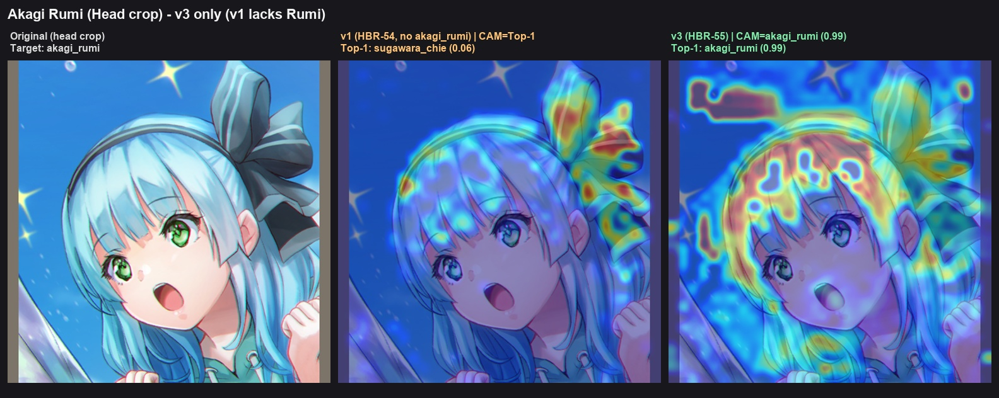
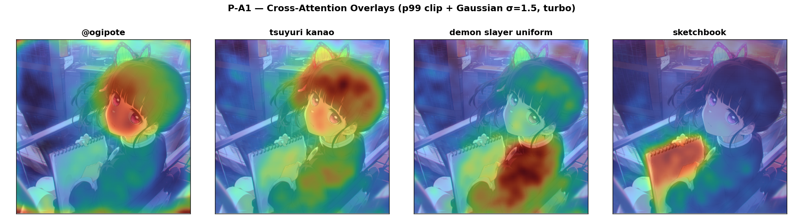
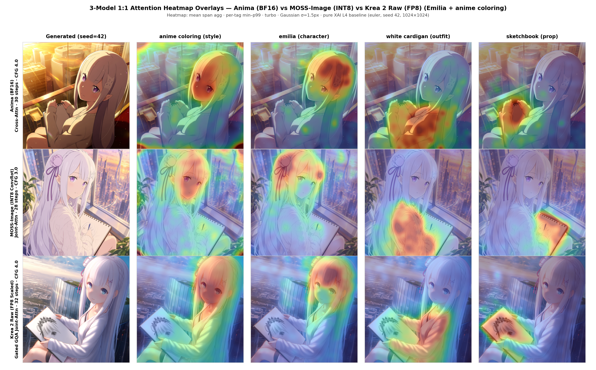
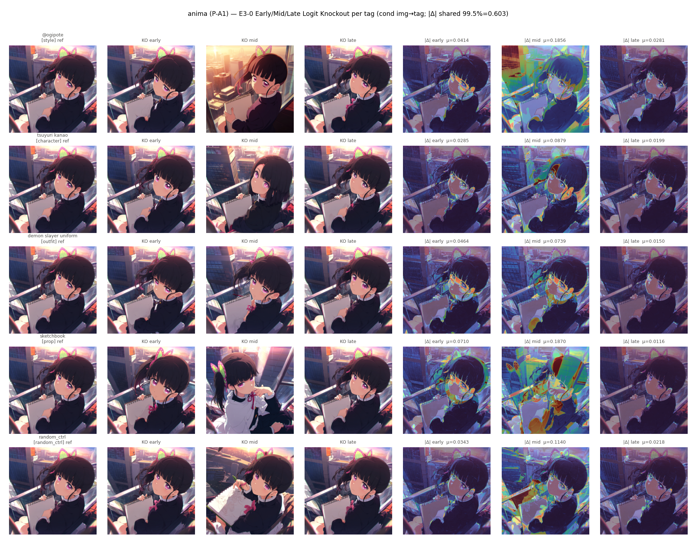
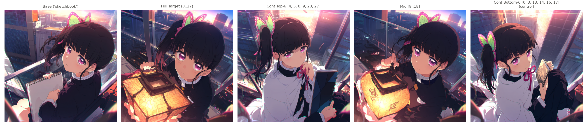

01 · OVERVIEW
프롬프트 단어가 그림의 어디에 먹히는지 눈으로 봅니다
Diffusion Transformer(DiT)가 노이즈를 그림으로 바꾸는 도중, 어텐션 점수를 역전파 없이 실시간 추출해 Anima · MOSS-Image · Krea 2를 같은 기준으로 시각화합니다.
이미지 패치 (Q)
프롬프트 단어 (K)
XAI 추출 (Hook)
템플릿 · 게이트 · 역전파
CAM vs DiT XAI · WHY BACKPROP vs FORWARD?
왜 분류기(CNN · ViT)는 역전파가 필요하고, DiT는 순전파만으로 될까?
라벨/단어가 모델의 어디에 위치하는가라는 구조적 차이 때문입니다. 분류기는 정답 라벨이 맨 끝 출력에만 등장해 거꾸로 추적(역전파)해야 하고, DiT는 프롬프트 단어가 처음부터 Key로 입력되어 순전파 어텐션 자체가 곧 히트맵이 됩니다.
1. 분류기 CAM / Grad-CAM (CNN · ViT)

2. 생성기 DiT 어텐션 (XAI_DiT)

03 · LIVE PIPELINE ANIMATION
실제 히트맵 코드(
실제 히트맵 코드(session.py · heatmap.py) 동작 과정
앞 탭에서 본 3모델 구조 위에 훅을 걸어, 실제 어텐션 히트맵이 뽑히는 5단계를 애니메이션으로 확인합니다.
1.청킹
2.추출
3.정제
4.누적
5.교정
02 · MODEL ARCHITECTURE (END-TO-END → BLOCK → ATTENTION)
모델 3종 구조 — 전체 흐름 · 1-블록 내부 · 어텐션 세부 구조
아래에서 모델을 선택하면 ① 전체 모델 구조 → ② 1-블록 내부 → ③ 어텐션 세부 구조 & XAI 훅 순으로 크게 확대해 볼 수 있습니다.
① Anima 전체 모델 구조 (End-to-End)
② Anima 1-블록 내부 구조 (Block i 확대)
③ Anima Cross-Attention 세부 구조 & XAI_DiT 훅
① MOSS-Image 전체 모델 구조 (End-to-End)
② MOSS-Image 1-블록 내부 구조 (Layer i 확대)
③ MOSS-Image 어텐션 세부 구조 & XAI_DiT 훅
① Krea 2 Raw 전체 모델 구조 (End-to-End)
② Krea 2 Raw 1-블록 내부 구조 (Block i 확대)
③ Krea 2 Raw 어텐션 세부 구조 & XAI_DiT 훅
04 · REAL RESULTS & CONTROL
실제 모델 비교 · 스텝 진화 · 중반 블록 소품 교체




